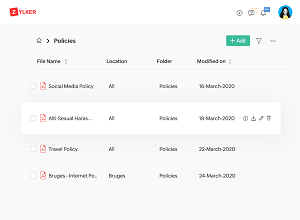

Market: Positioning
The Skinny
Gartner predicts low/no-code will represent 65% of all app development by 2024
-- TechCrunch article "3 steps to ease the transition to a no-code company"
A large number of investors are bullish on No-Code Databases: AirTable, a no-code vendor discussed in this document, recently raised $735M in series F funding, bringing its market value to $11B.
| Technology | Easy | Fast (RAD) | Capacity | Customizeable |
|---|---|---|---|---|
| Low-Code | ||||
| No-Code |
Low-code vs No-code
The G-2 Business Software Reviews site mentions that no-code Database Systems differ from low-code development platforms by:
- allowing for less functionality and customizability.
- Offering tools to quickly organize information rather than input unique code.
The idea is: if you need a spreadsheet-like system (ease of use, not customizeable) go with no-code; if you want more power/customizability go for low-code.
The Details
Ease of Use: Templates
Today both Low-Code and No-Code Systems offer canned Templates. A template is a pre-designed set of functionalies for a common use-case scenario.
IBM Notes/Domino also came with a set of Templates you could customize for your needs, including a Document Database, a Collaboration Database etc.
Here are a few links to Templates offered by today's vendors (please click to expand) ->
Low-Code:
| Zoho Creator | Mendix | Appian | Quickbase |
|---|---|---|---|
{kind=link}
{kind=link}
{kind=link}
{kind=link}
No-Code:
| AirTable | AppyPie | Formaloo | Knack |
|---|---|---|---|
{kind=link}
{kind=link}
{kind=link}
{kind=link}
Customizing Templates
The No-Code vendors above don't allow users to customize the canned templates (e.g., Knack says on its web site that if you need customization: 'Hire a Knack Expert')
The Low-Code vendors above do permit customization, but need Developers to customize their templates: often Senior Developers. Just because it's Low-Code doesn't mean the product is simple. There are certain benefits to even Developers using Low-Code systems: faster iterations, easier codebase maintenance, etc. However, no spreadsheet user can hope to use any of the Low-Code systems.
Here are screenshots from two Low-Code vendors, ask yourself if any spreadsheet user can deal with this amount of complexity (in my opinion, this is probably too complex for even a Junior Developer)
| PowerApps | Nocodb |
|---|---|
{kind=link}
{kind=link}
(Please note: sorry the PowerApps screenshot is fuzzy, the documentation on Microsoft PowerApp's website is still in development)
Hierarchical Views
This is a very early feature of Document Databases. IBM Notes/Domino first used hierarchical views back in the early 1990s.
Hierarchical Views offer numerous advantages, including:
- The ability to fit more data on the screen (for instance, if five columns are taking up your entire screen width, you can then group records by a further three criteria
- The ability to easily navigate through a grouped/sorted database (especially important for Enterprise use-case scenarios with > 1M records)
Some No-Code and almost all Low-Code vendors today use these views. Some examples are shown below:
| AirTable | Zoho Creator | Mendix | Appian |
|---|---|---|---|
|  |
{kind=link}
{kind=link}
{kind=link}
{kind=link}
Brij also uses Hierarchical Data Views, here is a screenshot.
{kind=link}
Capacity Limits: No-Code Systems
Most No-Code System vendors have Capacity Limits, as shown below:
| AirTable | Knack | BaseRow |
|---|---|---|
| Free: 1.2k records Plus: 5k records Pro:50k records Enterprise:250k records |
Starter: 20k records Pro: 50k records Corporate:125k records |
Free:3k records Premium: 10k records Enterprise:250k records |
While this is probably perfectly acceptable to Startup Founders or casual users, no enterprise user wants to be limited. Today's capacity needs - especially in the enterprise - are far more than 250k records.
Speed (of Development/Deployment)
Both Low-Code and No-Code systems offer this advantage over legacy systems, which is why it is the way of the future: a quick turnaround.
Even though developing a Low-Code Microsoft PowerApp would be significantly slower than developing a Spreadsheet-like No-Code App, Microsoft will cut Development time significantly over a custom, 'high-code' solution.
Brij offers a speed-of-turnaround somewhere between the no-code and low-code systems. We cannot beat the no-code systems simply because we offer so much more functionality. The additional power and customizeability comes with a slight speed disadvantage.